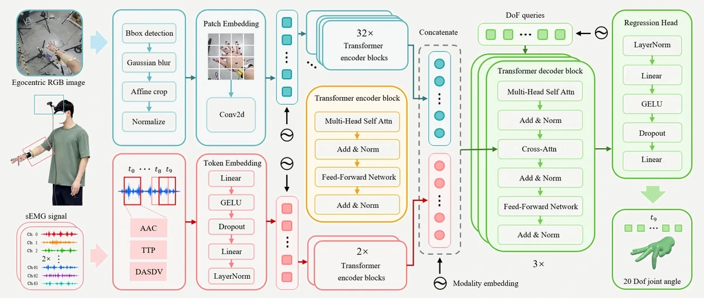
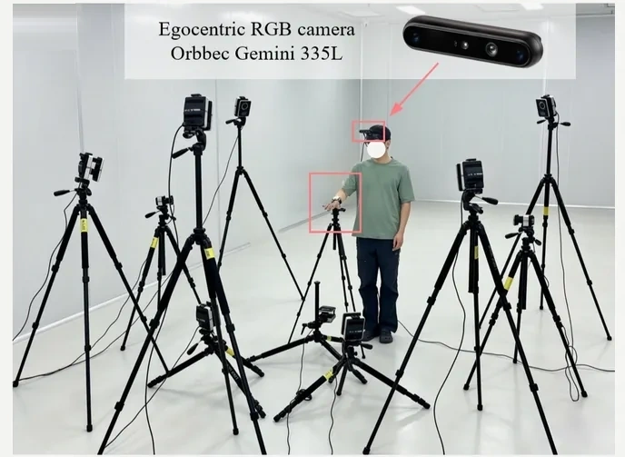
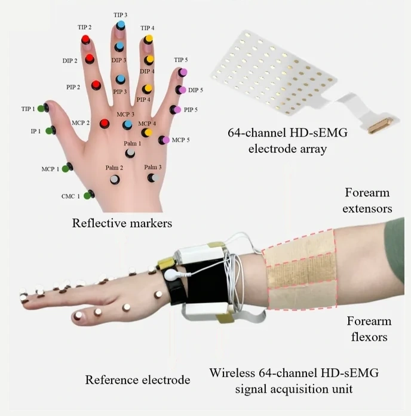
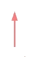
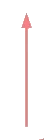
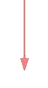
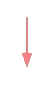

2025.10
— 2026.04
The University of Tokyo东京大学
Special Research Student · Graduate School of Engineering工学系研究科 · 特别研究学生

WELCOME TO MY HOME PAGE!欢迎来到我的主页！
I am an M.S. candidate in Mechanical Engineering at Dalian University of Technology and a former Special Research Student at The University of Tokyo. My research explores multimodal fusion of vision and sEMG for hand-motion understanding, human-intent perception, and dexterous teleoperation.
我是大连理工大学机械工程学院硕士研究生，曾赴东京大学交流。我的研究聚焦视觉与表面肌电的多模态融合，用于手部运动理解、人体意图感知与灵巧遥操作。
I believe human-robot interaction is shaped by more than technology. Aesthetics is also fundamental to how interaction is perceived and experienced. This belief connects my engineering research with my work on industrial design projects.我认为，人机交互不仅由技术塑造，美学同样影响交互被感知和体验的方式。因此，我也参与了多个工业设计项目，并将工程研究与产品美学贯穿于同一套实践之中。
Based in所在地Dalian, China大连，中国
ORCID0009-0005-8706-3198Foundation学术基础
2025.10
— 2026.04
Special Research Student · Graduate School of Engineering工学系研究科 · 特别研究学生
2024.09
— 2027.07
M.S. Student · Mechanical Engineering机械工程 · 硕士研究生
2020.09
— 2024.07
B.Eng. · Mechanical Design, Manufacturing and Automation机械设计制造及其自动化 · 工学学士
Peer-reviewed work同行评议成果
IEEE Robotics and Automation Letters · 2026 · First author
Jiahang Liu, Zhipeng Li, Renzhen Le, Xiao Zhang, Naohiko Sugita, Zhenzhi Ying, Liming Shu
IEEE/ASME Transactions on Mechatronics · 2026 · Accepted
Zhenzhi Ying, Wenbo Zhang, Jiahang Liu, Jiaze Sun, et al.
Project Experience项目经历
Current research · Under Review当前研究 · 审稿中
Dalian University of Technology / University of Tokyo大连理工大学 / 东京大学
2025.09 — PRESENT至今







Introduction研究简介
Continuous and accurate estimation of hand joint angles is important for intuitive human-machine interaction, yet a single sensing modality may not remain reliable across changing operating conditions. Egocentric RGB images provide hand appearance and spatial configuration, whereas forearm HD-sEMG captures muscle activation even when visual observations are degraded.连续、准确的手部关节角估计是实现直观人机交互的重要基础，但单一传感模态难以在不断变化的工作条件下始终保持可靠。第一视角 RGB 图像提供手部外观与空间构型信息，前臂高密度表面肌电则能在视觉信息受损时继续反映肌肉激活。
Method研究方法
We combine a Vision Transformer visual encoder, a Transformer-based EMG encoder, and a DoF-query fusion decoder to regress 20 hand joint angles from egocentric RGB images and 128-channel forearm HD-sEMG. An independent learnable query is assigned to each hand DoF, enabling joint-specific and context-adaptive integration of visual and EMG representations.我们结合视觉 Transformer 编码器、基于 Transformer 的肌电编码器与 DoF-query 融合解码器，从第一视角 RGB 图像和 128 通道前臂高密度表面肌电中回归 20 个手部关节角。每个手部自由度对应一个独立的可学习 query，从而实现面向关节、上下文自适应的视觉与肌电特征融合。
Results实验结果
More accurate, stable estimation. Fusion reached an overall R² of 0.88 and an MAE of 2.79°, outperforming vision only (0.82 / 3.21°) and sEMG only (0.68 / 5.13°), while showing the smallest cross-subject range.
Interpretable, context-adaptive fusion. Separate DoF queries learned different modality-attention patterns for individual joints and motion phases. Vision preserved spatial hand configuration, while sEMG supplied complementary dynamic cues when occlusion, finger overlap, or motion blur weakened visual evidence.
更准确、更稳定的估计。 融合模型的整体 R² 达到 0.88，MAE 为 2.79°，优于仅视觉模型（0.82 / 3.21°）和仅肌电模型（0.68 / 5.13°），同时具有最小的跨受试者变化范围。
可解释、上下文自适应的融合。 独立的 DoF query 针对不同关节与运动阶段学习了不同的模态注意模式。视觉保留手部的空间构型；当遮挡、手指重叠或运动模糊削弱视觉证据时，肌电提供互补的动态线索。
Dalian University of Technology大连理工大学
2024.09 — 2025.07
Teleoperation is crucial for robots in human–robot interaction and collaboration. It requires natural and precise mapping of human intent across multiple scales of motion to complete tasks. However, current human–robot interfaces based solely on vision or physiological signals still face the challenge of incomplete information.遥操作是机器人实现人机交互与协作的重要方式。为完成复杂任务，系统需要以自然、精准的方式映射不同尺度下的人体运动意图。然而，当前仅依赖视觉或生理信号的人机接口仍面临信息不完整的挑战。
Bachelor graduation thesis · Dalian University of Technology本科毕业设计 · 大连理工大学
2023.10 — 2024.07
Upper-limb dysfunction is one of the most common motor impairments following stroke. Conventional therapist-assisted passive rehabilitation is constrained by limited clinical resources and variable outcomes, whereas mirror therapy has demonstrated considerable rehabilitative benefits. As a bioelectrical modality for brain–computer interfaces, surface electromyography (sEMG) shows substantial potential in clinical rehabilitation and intelligent medical devices. These needs motivate the development of a new generation of intelligent, brain–computer-interface-based systems for post-stroke upper-limb rehabilitation. Accordingly, this study developed an intelligent upper-limb rehabilitation system that integrates mirror therapy with sEMG sensing.上肢功能障碍是脑卒中患者发病后多见的一种运动功能障碍。传统的被动人工临床上肢康复训练疗法存在着人工资源紧缺与康复效果不稳定等不足，而镜像康复疗法的康复效果十分显著。表面肌电信号（sEMG）作为脑-机接口生物信息的一种，在临床康复和智能化医疗器械中展现出了极大潜力。综上，新一代基于脑-机接口的智能卒中上肢康复系统亟待开发。因此，本文基于镜像康复疗法与表面肌电信号，搭建一套智能卒中上肢康复系统。
Form, structure, and product thinking形态、结构与产品思维
Aesthetics shapes how interaction is perceived.美学，决定交互如何被感知。
As Design Director at Venture Electronics, I work across product form, enclosure architecture, and visual communication for personal-audio hardware. I also design research hardware at Dalian University of Technology, centered on high-density sEMG acquisition systems.
作为微翼音频设计总监，我参与个人音频硬件的产品形态、外壳结构与视觉表达。同时，我也在大连理工大学参与高密度表面肌电采集系统相关的科研硬件设计。
Design Director设计总监
Research hardware科研硬件
Dalian University of Technology大连理工大学
Toolbox & character工具与个性
Python · PyTorch · PyTorch Lightning · OpenCV · MuJoCo · MATLAB · ROS2
Rhino · Autodesk Inventor · KeyShot
Mandarin · Native
English · CET-6 535中文 · 母语
英语 · CET-6 535

Beyond the lab实验室之外
Same curiosity, same focus, same strength.同样的好奇，同样的专注，同样的力量。
Collected moments片刻收集